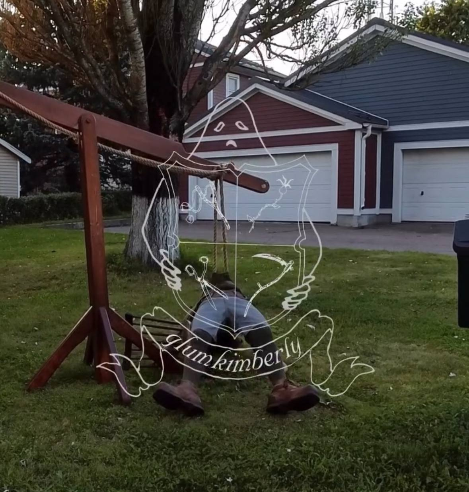

GLUM KIMBERLY
Glumkimberly — это прогулка домой через лес после вечеринки.
Glumkimberly была основана в 2018 году Богданом. Вдохновленный своим детством в Сибири и работой на семейной ферме, бренд стремится передать двойственность обычной и суровой реальности, мечтая о красивой и эстетичной жизни. Glumkimberly рассказывает о свободных днях вдали от фермы, когда можно было примерять наряды с друзьями и семьей
Руководствуясь страстью к ремеслу и преданностью качеству, бренд предлагает современный взгляд на женскую классику, опираясь на простые силуэты с продуманными детализированными элементами. Бренд использует элементы винтажных тканей, чтобы подчеркнуть атмосферу.
Glumkimberly существует в пустынном, но уютном сибирском пейзаже.
Перейти на сайт бренда